Bespoke Artwork
To me, anime is an incredible art form, and I aim to have it
tastefully printed so that I could wear my fandoms with artistic pride.
So when OTV asked me to help art direct this project, I knew we’d need a piece
that could stand alone as a piece of art by itself
This is printed w/ 5gg yarn (stitches/inch) concept by Airi Pan, final illustration be Genie Ink

by fans, for fans
Even the logo is custom designed to shape OTV
into the Frieren brand. The weave pattern above the logo is a deliberate nod to Fern’s sweater, something only fans would know and appreciate
that could stand alone as a piece of art by itself
Logo is designed by Vincent Wu

quality at a glance
310 gsm heavyweight 100% cotton
Having worn and own many anime merchandise where the
logo is just “slapped” onto a flimsy t-shirt, this is
where the OTV team and I wanted to change this narrative. Undeniable quality.


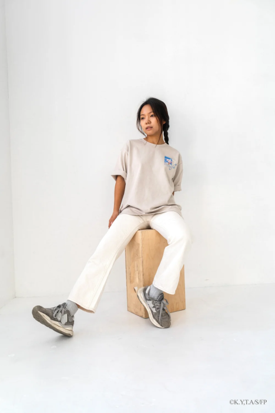
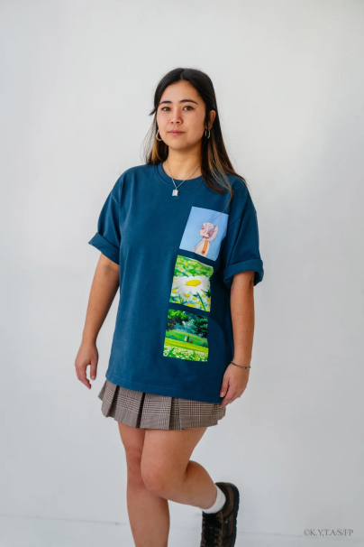
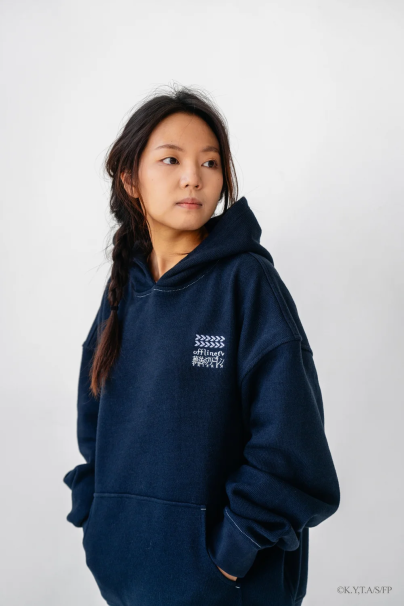
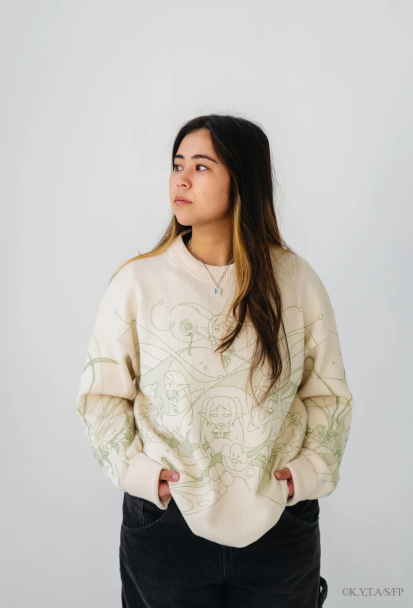
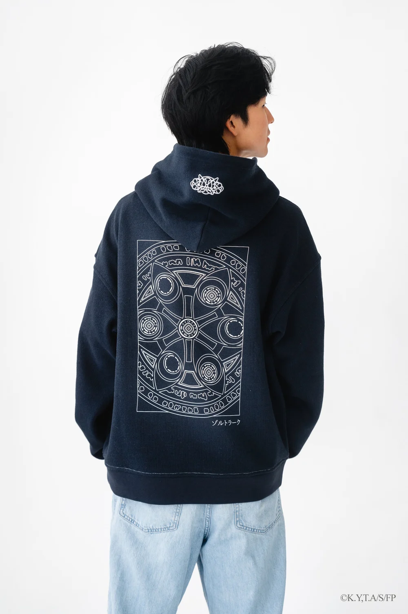
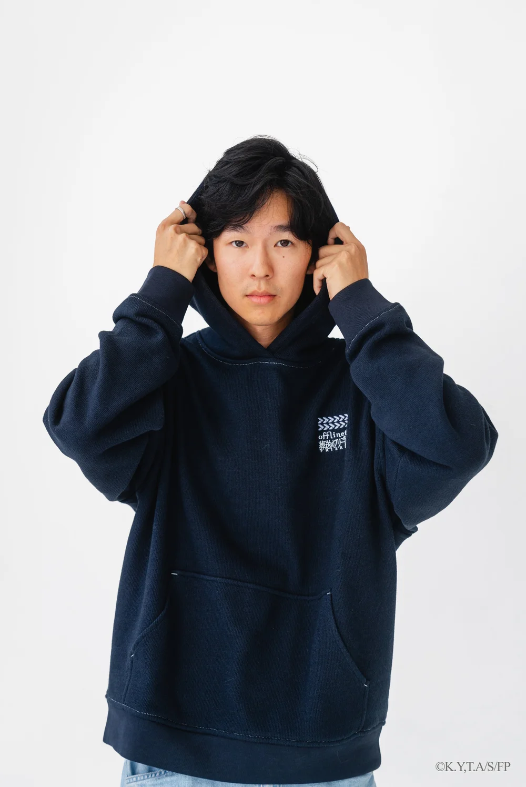
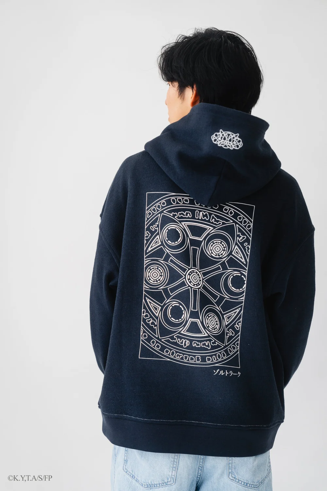
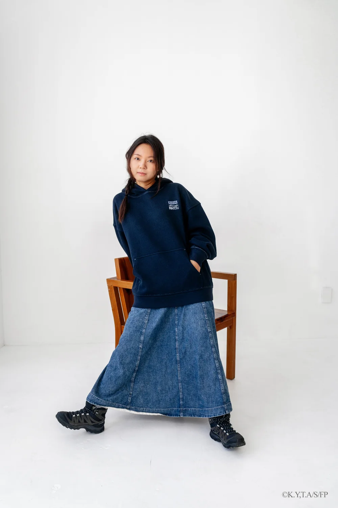
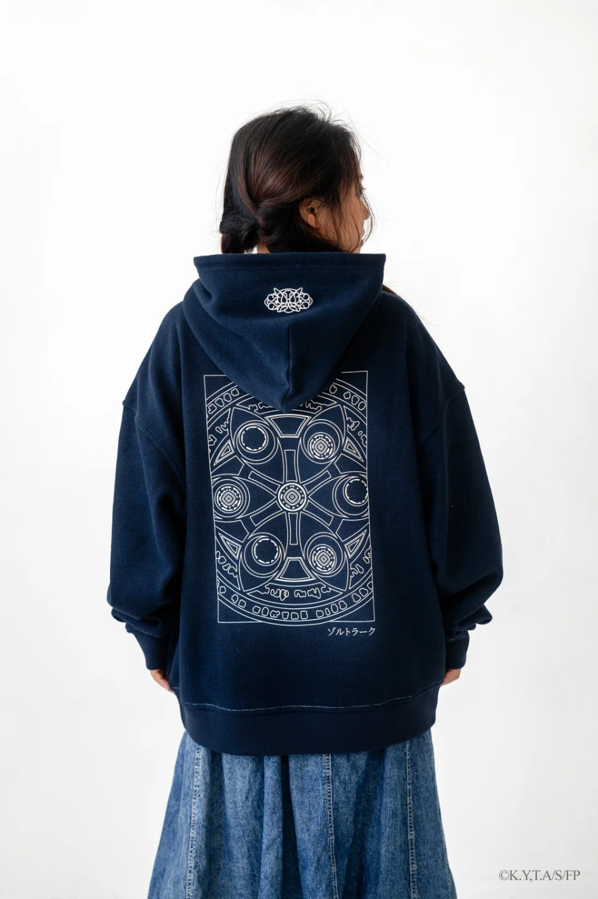
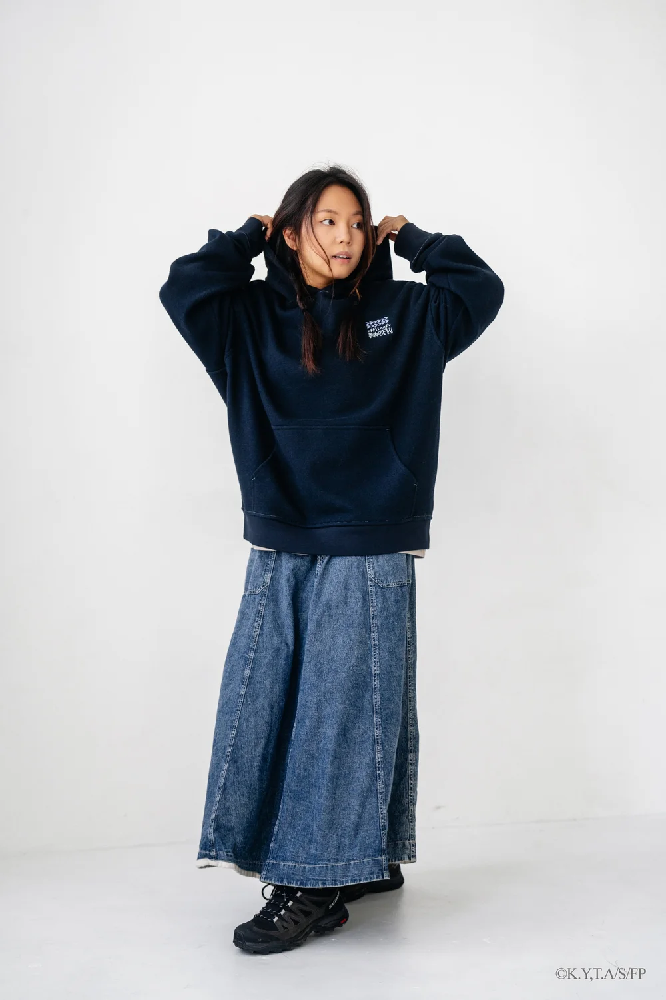
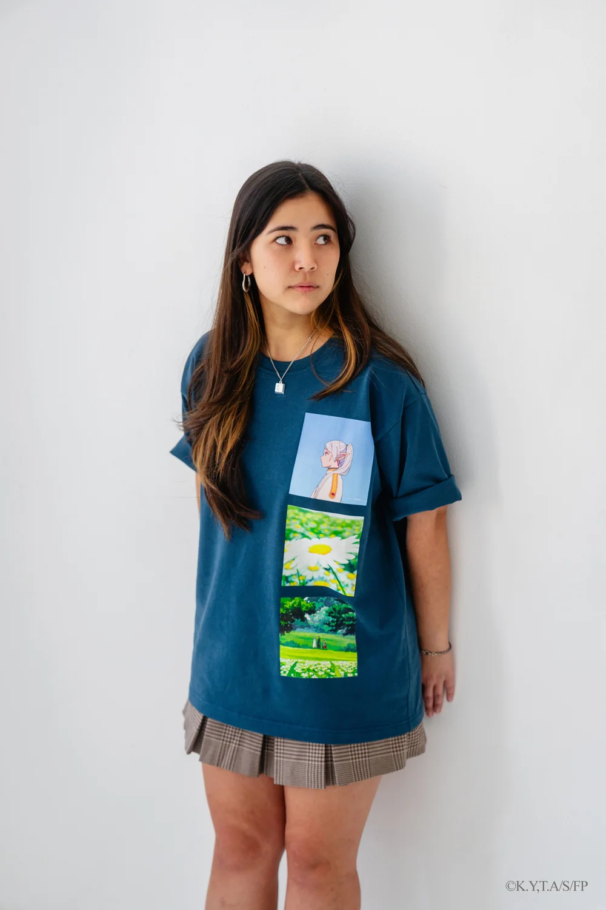